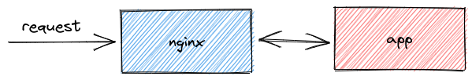

Docker 101
ここでは、Docker の使い方について説明します。細かい説明は省略していますので、適宜コマンドの意味などを調べながら進めてください。
Docker Command 101
Docker コンテナを起動してコマンドを実行する
docker run コマンドでコンテナを起動して、指定したコマンドを実行できます。
$ sudo docker run --rm -it ubuntu:22.04 bash
# コンテナの中でコマンドを実行する
container:/# hostname
# コンテナを抜ける
container:/# exit
Docker コンテナの起動 / コマンドの実行 / 停止
docker run に -d フラグを付与するとバックグラウンドで動きます。
47e2feb... は Docker によって割り振られたユニークなコンテナの ID です。
$ sudo docker run --name ubuntu -d ubuntu:22.04 sleep 120
47e2feb752c3a8f0684fa10647d4c48a02f0fd0855c54c7865c47d647e9e7876
現在動いているコンテナは docker ps で確認できます。
# 現在動いている Docker コンテナ
$ sudo docker ps
CONTAINER ID IMAGE COMMAND CREATED STATUS PORTS NAMES
47e2feb752c3 ubuntu:22.04 "sleep 120" 2 seconds ago Up 1 second ubuntu
起動しているコンテナでコマンドを実行するには docker exec コマンドを使います。
# ubuntu コンテナの中でコマンドを実行
$ sudo docker exec ubuntu ps auxf
USER PID %CPU %MEM VSZ RSS TTY STAT START TIME COMMAND
root 7 0.0 0.0 7060 1572 ? Rs 07:25 0:00 ps auxf
root 1 0.0 0.0 2788 1008 ? Ss 07:25 0:00 sleep 120
コンテナを停止するには docker stop を使います。
# ubuntu コンテナを停止
$ sudo docker stop ubuntu
ubuntu
docker run コマンドに --rm フラグを付与していなかったので、コンテナは自動で削除されません。
# コンテナ一覧( `-a` フラグで停止したコンテナも含む)
$ sudo docker ps -a
CONTAINER ID IMAGE COMMAND CREATED STATUS PORTS NAMES
47e2feb752c3 ubuntu:22.04 "sleep 120" 39 seconds ago Exited (137) 7 seconds ago ubuntu
コンテナを削除するには docker rm コマンドを使います。
# コンテナを削除する
$ sudo docker rm ubuntu
ubuntu
$ sudo docker ps -a
CONTAINER ID IMAGE COMMAND CREATED STATUS PORTS NAMES
Web アプリケーションをコンテナで動かす
簡単な Web アプリケーションをコンテナで動かします。
次のステップで進めていき、最終的に図のような構成のコンテナを作ります。
- nginx をコンテナで動かす
- nginx の設定を変更する
- Sinatra のアプリケーションをコンテナで動かす
- docker-compose で nginx と Sinatra のアプリケーションを動かす

nginx をコンテナで動かす
nginx コンテナを起動します。docker run の -p フラグでポートフォワーディングできます。
また、docker logs でコンテナのログ(stdout, stderr)を確認できます。
$ sudo docker run --name nginx --rm -it -d -p 12345:80 nginx:latest
d8e5834d90fd0e8ed0d6c3384379fdf07fb585e44a077b66dc8841f95a77b7aa
$ sudo docker ps
CONTAINER ID IMAGE COMMAND CREATED STATUS PORTS NAMES
d8e5834d90fd nginx:latest "/docker-entrypoint.…" 2 seconds ago Up 2 seconds 0.0.0.0:12345->80/tcp, :::12345->80/tcp nginx
$ sudo docker logs nginx | tail -n 3
2022/07/03 07:31:15 [notice] 1#1: start worker processes
2022/07/03 07:31:15 [notice] 1#1: start worker process 31
2022/07/03 07:31:15 [notice] 1#1: start worker process 32
curl で nginx コンテナに接続します。
$ curl localhost:12345
<!DOCTYPE html>
<html>
<head>
<title>Welcome to nginx!</title>
<style>
html { color-scheme: light dark; }
body { width: 35em; margin: 0 auto;
font-family: Tahoma, Verdana, Arial, sans-serif; }
</style>
</head>
<body>
<h1>Welcome to nginx!</h1>
<p>If you see this page, the nginx web server is successfully installed and
working. Further configuration is required.</p>
<p>For online documentation and support please refer to
<a href="http://nginx.org/">nginx.org</a>.<br/>
Commercial support is available at
<a href="http://nginx.com/">nginx.com</a>.</p>
<p><em>Thank you for using nginx.</em></p>
</body>
</html>
docker logs で接続があったことを確認できます。
$ sudo docker logs nginx | tail -n 1
172.17.0.1 - - [03/Jul/2022:07:32:16 +0000] "GET / HTTP/1.1" 200 615 "-" "curl/7.81.0" "-"
nginx コンテナを停止します。
$ sudo docker stop nginx
index.html を変更する
/home/vagrant/src/webapp/html に index.html があります。これをコンテナにマウントしてデフォルトの index.html を変更します。
ホストのファイルをコンテナにマウントするには -v フラグを使います。
$ pwd
/home/vagrant/src/webapp
$ sudo docker run --name nginx --rm -d -p 12345:80 -v $PWD/html:/usr/share/nginx/html nginx:latest
6747a4f486038ed685829ddd85cfa560a5c76df20245010899c71a52c3ec324a
$ curl localhost:12345
<!DOCTYPE html>
<html lang="en">
<head>
<meta charset="UTF-8">
<title></title>
</head>
<body>
Hello Docker!
</body>
</html>
$ sudo docker stop nginx
オリジナルの nginx コンテナイメージを作成する
docker build でコンテナイメージを作成します。ここでは mynginx という名前のコンテナを作成し、latest タグをつけています。
Info
Dockerfile の内容を確認しましょう。
$ pwd
/home/vagrant/src/webapp
$ sudo docker build -t mynginx:latest .
mynginx イメージを使ったコンテナを起動します。
$ sudo docker run --rm -d --name nginx -p 12345:80 mynginx:latest
$ curl localhost:12345
<!DOCTYPE html>
<html lang="en">
<head>
<meta charset="UTF-8">
<title></title>
</head>
<body>
Hello Docker!
</body>
</html>
$ curl -H 'Host: nginx.local' localhost:12345/example/
<html>
<head><title>301 Moved Permanently</title></head>
<body>
<center><h1>301 Moved Permanently</h1></center>
<hr><center>nginx/1.23.0</center>
</body>
</html>
$ sudo docker rm nginx
アプリコンテナを作る
Sinatra で作られた Web アプリケーションをコンテナにします。
Info
Dockerfile の内容を確認しましょう。
$ pwd
/home/vagrant/src/webapp/app
$ sudo docker build -t app:latest .
コンテナを起動して、接続できることを確認します。
$ sudo docker run --name app -d -p 9292:9292 app:latest
661dcf33529310fdd9fdeb4a6cc1a6b5b16c47c1e96598a51edc2d5636ae9a4c
$ curl localhost:9292
Hello Sinatra
$ sudo docker stop app
app
nginx を経由して app に接続する
nginx をリバースプロキシとして、app に接続するように構成します。都度コンテナイメージをビルドし、起動するのは手間なので docker-compose で構築します。
Info
docker-compose.yml の内容を確認しましょう。
$ pwd
/home/vagrant/src/webapp
$ docker compose up -d
$ curl -H 'Host: app.local' http://localhost/
Hello Sinatra
$ docker compose stop